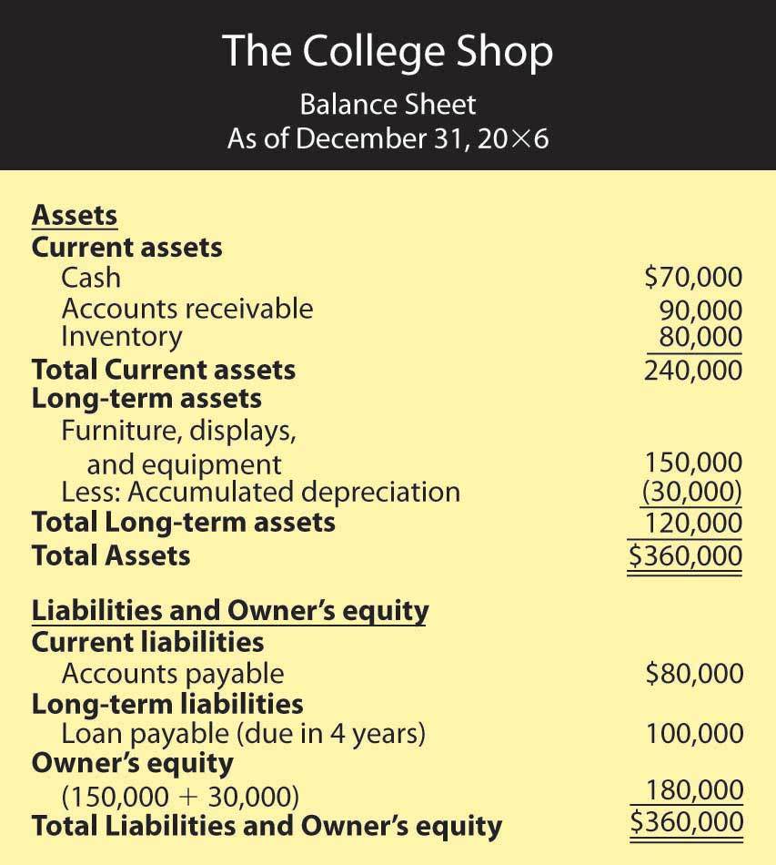

Now, let’s go a step further by examining the world of accrual accounting. In our hypothetical example, we’ve assumed that all your transactions were made in cash. You paid cash for your inputs (plastic treasure chests and toys) and for your other expenses, as well. Customers paid cash when they bought your Stress-Buster Packs. In the real world, things are different. The following are some examples:
In situations such as these, firms use accrual accountingAccounting system that records transactions when they occur, regardless of when cash is paid or received.: a system in which the accountant records a transaction when it occurs, without waiting until cash is paid out or received. Here are a few basic principles of accrual accounting:
It’s easier to make sense of all this when you see some real numbers. Let’s assume that you successfully operated the Stress-Buster Company while you were in college. Now fast-forward to graduation, and rather than work for someone else, you’ve decided to set up a business—some kind of retail outlet—close to the college. During your four years in school, you noticed that there was no store near campus that met the wide range of students’ specific needs. Thus, the purpose of your proposed store: to provide products that satisfy the specific needs of students.
Figure 12.10 The College Shop

You’ve decided to call your store “The College Shop.” Your product line will range from things needed to outfit a dorm room (linens, towels, small appliances, desks, rugs, dorm refrigerators) to things that are just plain fun and make student life more enjoyable (gift packages, posters, lava lamps, games, inflatable furniture, bean bag chairs, message boards, shower radios, backpacks). And you also plan to sell the original Stress-Buster Fun Pack. You’ll advertise to students and parents through the college newspaper and your own Web site.
Now, let’s repeat the process we went through with your first business. First, we’ll prepare a beginning balance sheet that reflects your new company’s assets, liabilities, and owner’s equity on your first day of business—January 1, 20X6. Next, we’ll prepare an income statement. Finally, we’ll create a balance sheet that reflects the company’s financial state at the end of your first year of business.
Though the process should now be familiar, the details of our new statements will be more complex because your transactions will be more complicated: you’re going to sell and buy stuff on credit, maintain an inventory of goods to be sold, retain assets for use over an extended period, borrow money and pay interest on it, and deal with a variety of expenses that you didn’t have before (rent, insurance, and so on).
Your new beginning balance sheet contains the same items as the one you created for your Stress-Buster Company—cash, loans, and owner’s equity. But because you’ve already performed a broader range of transactions, you’ll need some new categories:
You need to prepare a more sophisticated balance sheet than the one you created for your first business. We call this new kind of balance sheet a classified balance sheetBalance sheet that totals assets and liabilities in separate categories. because it classifies assets and liabilities into separate categories.
On a classified balance sheet, assets are listed in order of liquiditySpeed with which an asset can be converted into cash.—how quickly they can be converted into cash. They’re also broken down into two categories:
Your current assets will be cash and inventory, and your long-term assets will be furniture and equipment.
Liabilities are grouped in a similar manner:
You have two loans: one loan payable in a year, which is considered current, and one long-term loan due in five years.
You’re ready to review your beginning balance sheet, which is shown in Figure 12.11 "Balance Sheet for The College Shop". Once again, your balance sheet actually balances: total assets of $275,000 equals total liabilities and owner’s equity of $275,000. Let’s begin our analysis with the liabilities and owner’s equity sections. Thanks to a strong business plan, you’ve convinced a local bank to loan you a total of $125,000—a short-term loan of $25,000 and a long-term loan of $100,000. The bank charges you interest (which is the cost of borrowing money); your rate is 8 percent per year. In addition, you personally contributed $150,000 to the business (thanks to a trust fund that paid off when you turned 21).
Figure 12.11 Balance Sheet for The College Shop
Now, let’s focus on the assets section. What do you have to show for your $275,000 in liabilities and owner’s equity? Of this amount, $50,000 is in cash (in your checking, savings, and money market accounts). You used another $75,000 to pay for inventory that you’ll sell throughout the year. Finally, you spent $150,000 on several long-term assets, including a sign for the store, furniture, store displays, and computer equipment. You expect to use these assets for five years, at which point you’ll probably replace them.
Now, let’s look at your income statement, which is shown in Figure 12.12 "Income Statement for The College Shop". It’s more complex than the one you prepared for your Stress-Buster Company, and the amounts are much larger. In addition, the statement covers a full calendar year.
Figure 12.12 Income Statement for The College Shop
Note that this statement is designed for a merchandiser—a company that makes a profit by selling goods. How can you tell? Businesses that sell services rather than merchandise (such as accounting firms or airlines) don’t have a Cost-of-goods sold line on their statements.
The format of this income statement highlights the most important financial fact in running a merchandising company: you must sell goods at a profit (called gross profit) that’s high enough to cover your operating costs, interest, and taxes. Your income statement shows that you generated $225,000 in gross profit through the sale of goods. This amount is sufficient to cover your operating costs, interest, and taxes and still produce a net income of $30,000.
Note that your income statement also lists a few expenses that your first business didn’t incur:
Let’s conclude with your balance sheet for the end of your first year of operations, which is shown in Figure 12.13 "End-of-the-First-Year Balance Sheet for The College Shop".
Figure 12.13 End-of-the-First-Year Balance Sheet for The College Shop
First, look at your assets. At year’s end, you have a cash balance of $70,000 and inventory of $80,000. You also have an accounts receivable of $90,000 because many of your customers have bought goods on credit and will pay later. In addition, the balance sheet now shows two numbers for long-term assets: the original cost of these assets, $150,000, and an accumulated depreciation amount of $30,000. (Accumulated depreciation reflects the amount that you’ve charged as depreciation expense since you purchased the assets.) The net value of the long-term assets is now $120,000 ($150,000 – $30,000), which is the difference between their original cost and the amount that they’ve been depreciated. The total of your assets is $360,000.
The total of your liabilities of $180,000 and owner’s equity of $180,000 also equals $360,000. Your liabilities consist of a long-term loan of $100,000 (which now is due in four years) and accounts payable of $80,000 (money that you’ll have to pay out later for purchases that you’ve made on credit). Your owner’s equity (your investment in the business) totals $180,000 (the $150,000 you originally put in plus the $30,000 first-year earnings that you retained in the business).
We now need to examine a type of financial statement that we omitted from our previous discussion. Owners, investors, and creditors can learn a lot from your balance sheet and your income statement. Each tells its own story. The balance sheet tells what assets your company has now and where they came from. The income statement reports earned income on an accrual basis (recognizing revenues when earned and expenses as incurred regardless of when cash is received or paid). But the key to surviving in business is generating cash to keep operating. It’s not unusual to hear reports about companies with cash problems. Sometimes they arise because the products in which the firm has invested aren’t selling as well as it had forecast. Maybe the company tied up too much money in a plant that’s too big for its operations. Maybe it sold products to customers who can’t pay. Maybe management simply overspent. Whatever the reason, cash problems will hamper any business. Owners and other interested parties need a financial statement that helps them understand a company’s cash flow.
The statement of cash flowsFinancial statement reporting on cash inflows and outflows resulting from operating, investing, and financing activities. tells you where your cash came from and where it went. It furnishes information about three categories of activities that cause cash either to come in (cash inflows) or to go out (cash outflows):
Figure 12.14 Statement of Cash Flows for The College Shop

A cash flow statement for The College Shop would look like the one in Figure 12.14 "Statement of Cash Flows for The College Shop". You generated $45,000 in cash from your company’s operations (a cash inflow) and used $25,000 of this amount to pay off your short-term loan (a cash outflow). The net result was an increase in cash of $20,000. This $20,000 increase in cash agrees with the change in your cash during the year as it’s reported in your balance sheets: you had an end-of-the-year cash balance of $70,000 and a beginning-of-the-year balance of $50,000 (and $70,000 – $50,000 = $20,000). Because you didn’t buy or sell any long-term assets during the year, your cash flow statement shows no cash flows from investing activities.
(AACSB) Analysis
To earn money to pay some college expenses, you ran a lawn-mowing business during the summer. Before heading to college at the end of August, you wanted to find out how much money you earned for the summer. Fortunately, you kept good accounting records. During the summer, you charged customers a total of $5,000 for cutting lawns (which includes $500 still owed to you by one of your biggest customers). You paid out $1,000 for gasoline, lawn mower repairs, and other expenses, including $100 for a lawn mower tune-up that you haven’t paid for yet. You decided to prepare an income statement to see how you did. Because you couldn’t decide whether you should prepare a cash-basis statement or an accrual statement, you prepared both. What was your income under each approach? Which method (cash-basis or accrual) more accurately reflects the income that you earned during the summer? Why?
(AACSB) Analysis
Identify the categories used on a classified balance sheet to report assets and liabilities. How do you determine what goes into each category? Why would a banker considering a loan to your company want to know whether an asset or liability is current or long-term?
(AACSB) Analysis
You review a company’s statement of cash flows and find that cash inflows from operations are $150,000, net outflows from investing are $80,000, and net inflows from financing are $60,000. Did the company’s cash balance increase or decrease for the year? By what amount? What types of activities would you find under the category investing activities? Under financing activities? If you had access to the company’s income statement and balance sheet, why would you be interested in reviewing its statement of cash flows? What additional information can you gather from the statement of cash flows?